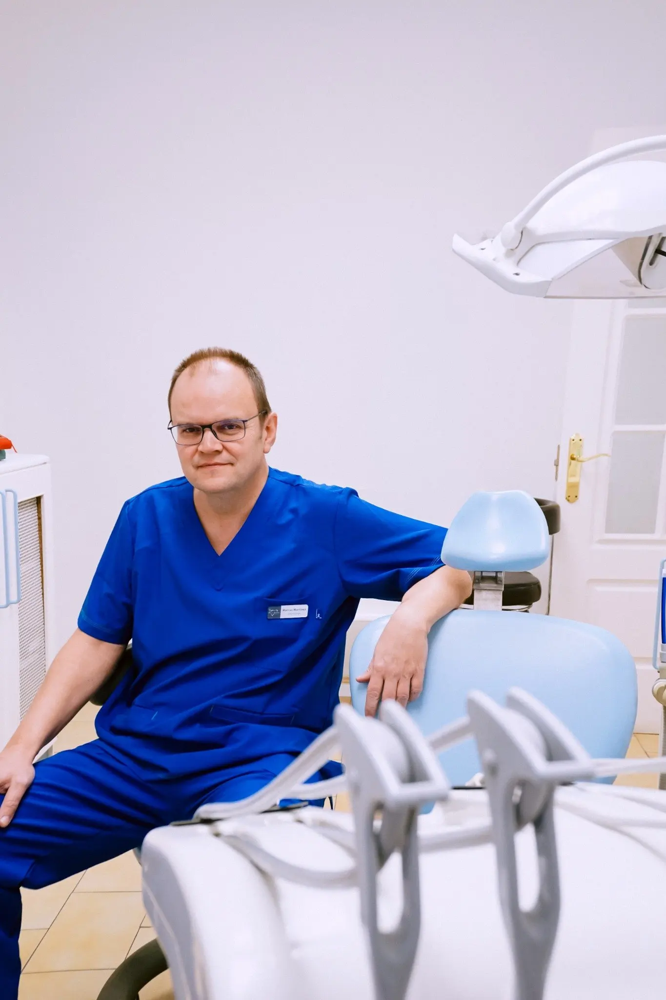
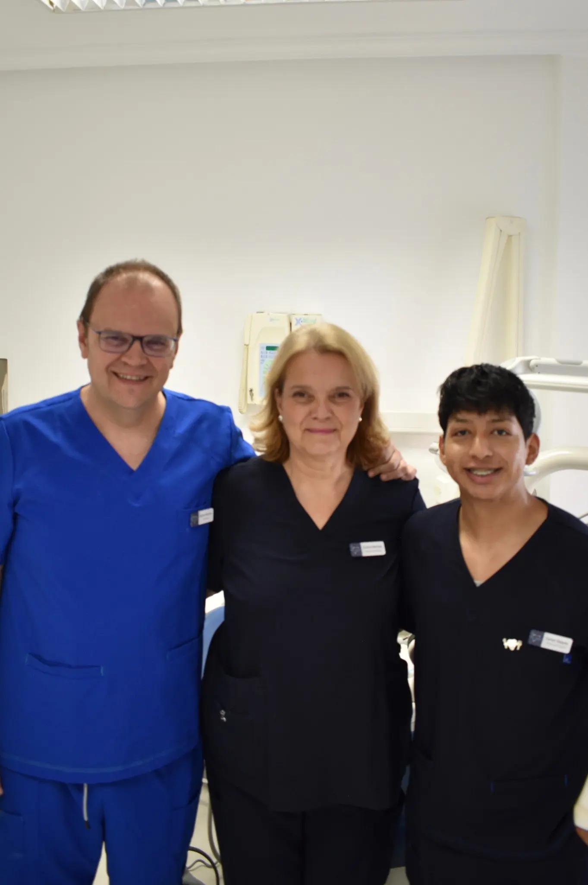
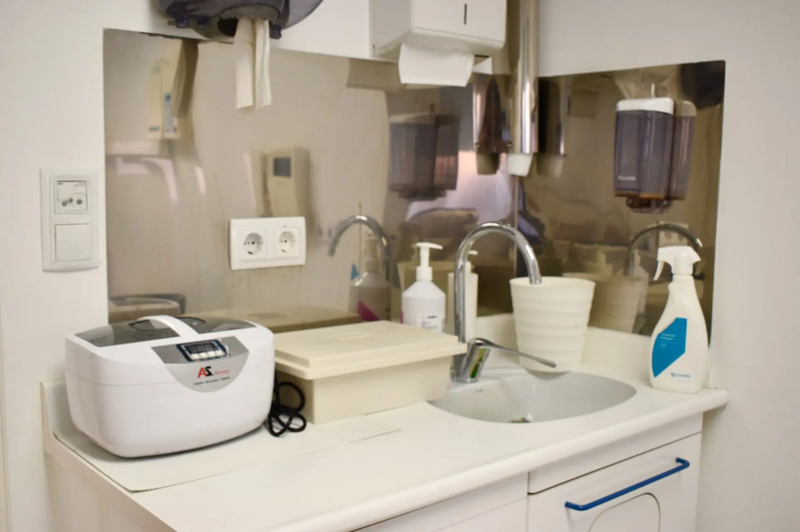

Diagnóstico honesto
Solo lo que realmente necesitas
Clínica dental en Carabanchel
Odontología honesta, cercana y sin prisas. Un equipo familiar que escucha, explica y cuida de ti en cada visita.


Clínica familiar
para niños y adultos
Primera valoración
Escuchamos tu caso con calma
Solo lo que realmente necesitas
Te escuchamos sin prisas
Adaptado a ti y a tu ritmo
Oporto · Opañel · Carabanchel
Así te acompañamos
Háblanos de lo que te preocupa. Te escuchamos de verdad.
Revisamos tu salud bucodental y resolvemos todas tus dudas.
Te presentamos un plan claro, comprensible y a tu medida.
Seguimos cerca antes, durante y después del tratamiento.

Nuestra filosofía
Queremos que entiendas qué ocurre en tu boca y por qué recomendamos cada tratamiento. Sin tecnicismos innecesarios, sin presión y con toda la información para decidir tranquilo.
Todos los tratamientos
Prevención, salud, función y estética con un enfoque personalizado para niños y adultos.
Recupera piezas perdidas con planificación precisa.
↗ 02Mejora la alineación y la mordida a cualquier edad.
↗ 03Visitas positivas y prevención para los más pequeños.
↗ 04Alivia tensión, dolor y desgaste dental.
↗ 05Conservamos dientes dañados siempre que es posible.
↗ 06Protegemos tus encías y el soporte de tus dientes.
↗ 07Una sonrisa más armónica, natural y saludable.
↗ 08Recupera comodidad, función y seguridad al sonreír.
↗ 09Revisiones, empastes y cuidado conservador.
↗ 10Prevención profesional para una boca sana.
↗ 11Procedimientos planificados con precisión y calma.
↗Un espacio pensado para ti
Instalaciones actuales, luminosas y preparadas para que te sientas cómodo desde que entras.
Visita la clínica ↗Lo que más valoran
★★★★★“Me explicaron todo con mucha claridad y no sentí ninguna prisa. El trato fue cercano desde el primer momento.”
★★★★★“Una clínica familiar y profesional. Transmiten tranquilidad incluso cuando vas con miedo al dentista.”
★★★★★“Valoración honesta, presupuesto claro y seguimiento durante todo el tratamiento. Muy recomendable.”
Da el primer paso
Cuéntanos qué necesitas. Te ayudaremos a encontrar el mejor momento para venir.
Metro Oporto y Opañel
Atención con cita previa